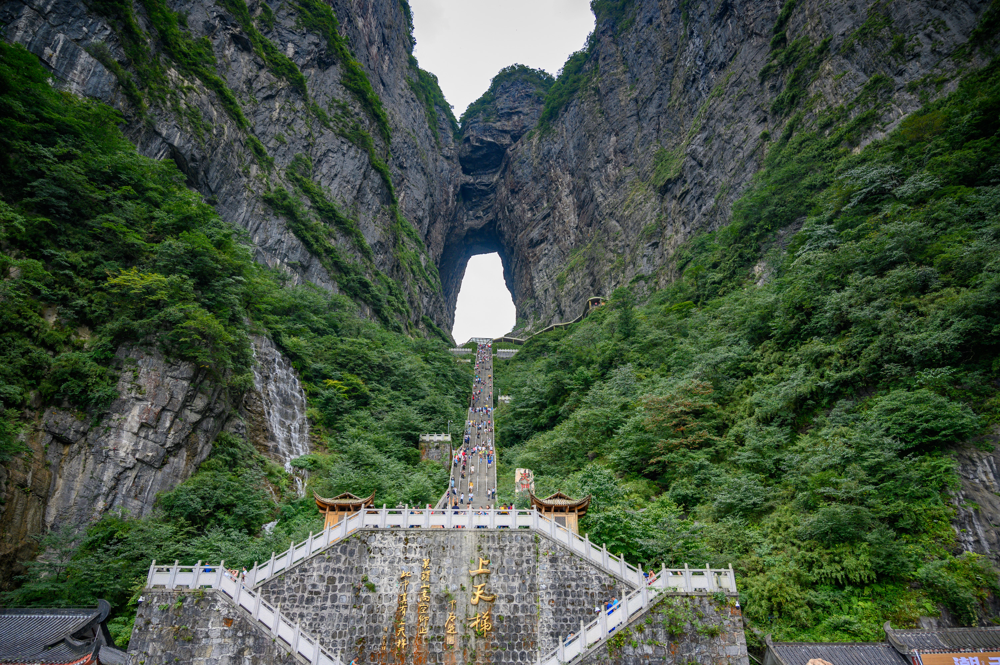
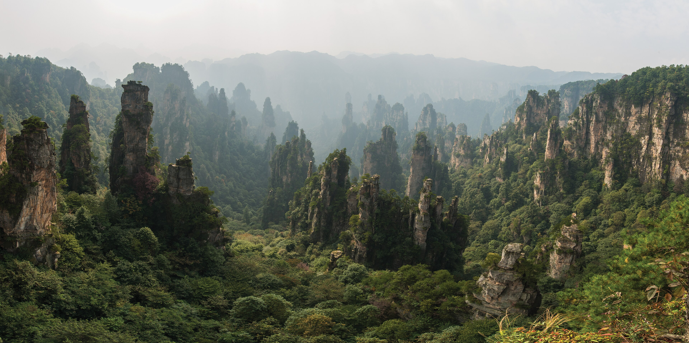
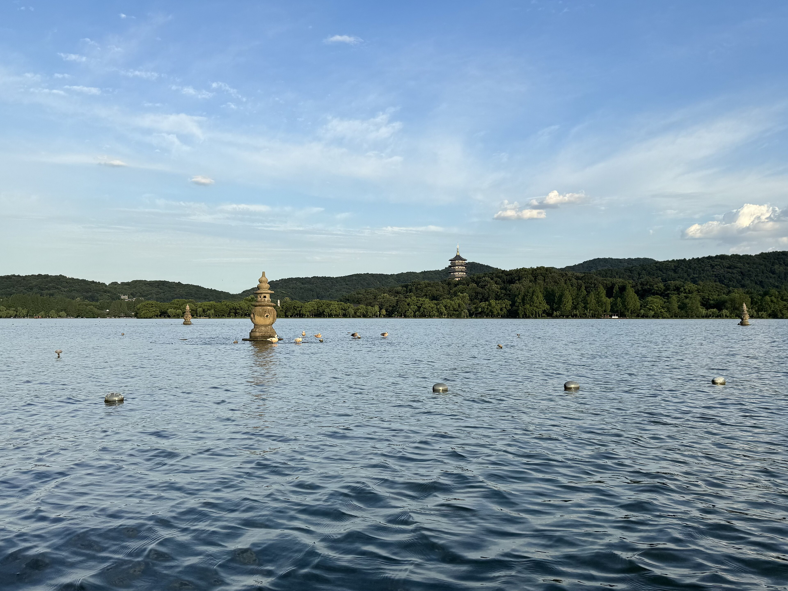
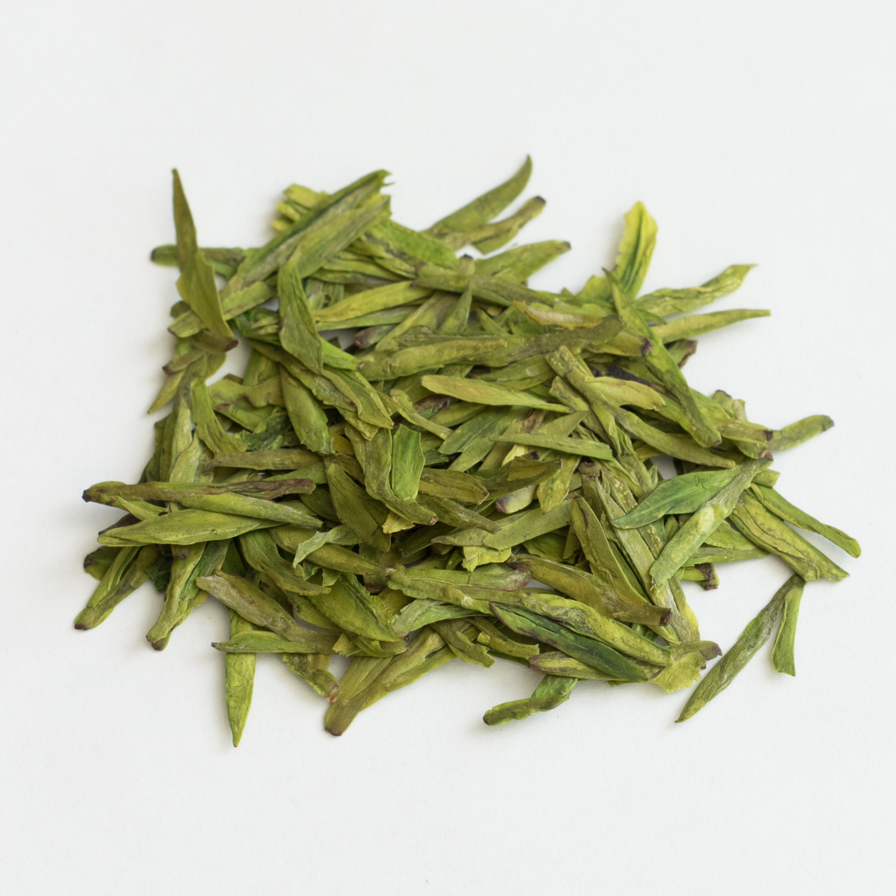
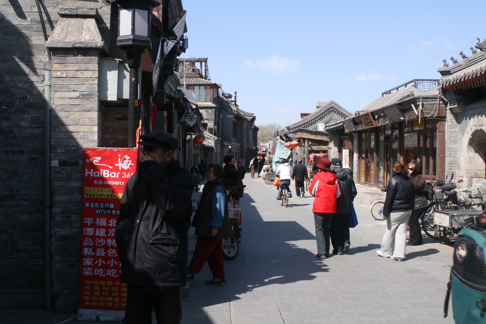
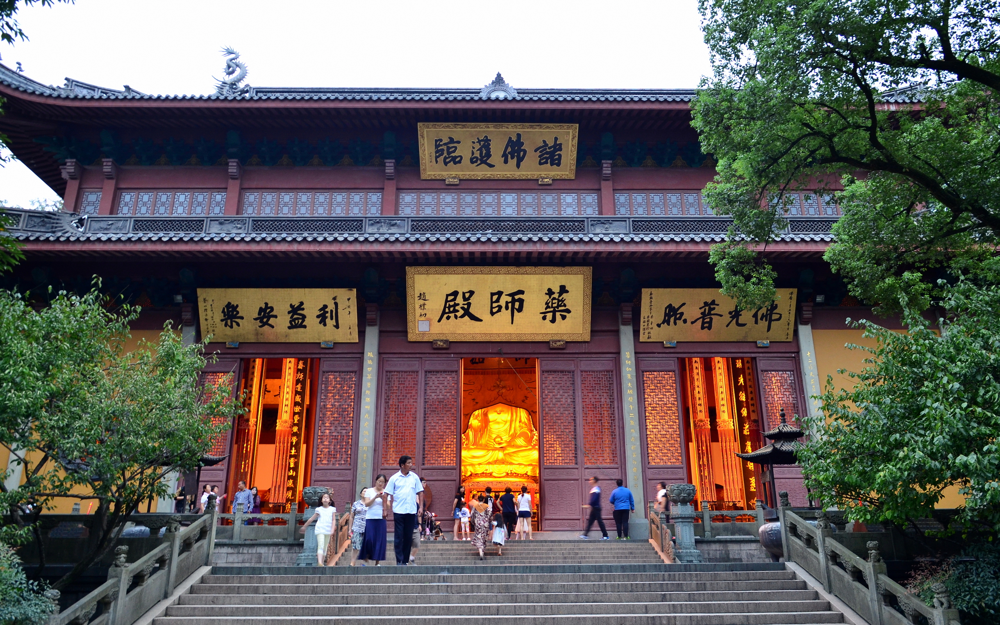

01
第一天
Thursday, 18 June 2026
✈️ In Transit — Cairo to Dubai
- 20:05 EK 924 departs Cairo (CAI) — Emirates A380
- 23:05 Arrive Dubai (DXB) — connect overnight
- ~ Rest at airport / Emirates lounge
✈ Flight
EK 924 · Cairo → Dubai
Airbus A380 · 3h flight · Booking ref 1653713358976673
💡
Emirates A380 upper-deck seats offer extra quiet on overnight sectors. Family of 5 — block-book seats 62A–62E (if available) for a full row. Dubai Lounge at T3 (Concourse A/B) is open 24h.

02
第二天
Friday, 19 June 2026
🏙️ Beijing — Arrival Day
- 03:50 EK 306 departs Dubai (DXB) — Emirates
- 15:25 Land Beijing Capital (PEK)
- 17:00 Check-in Rosewood Beijing
- 19:30 Dinner at Quanjude Wangfujing
🏨
Rosewood Beijing
Ultra-luxury 5-star hotel · $700/night · Prime location near CCTV Tower
🌐 Hotel Website
🦆
Quanjude Wangfujing
Beijing's most celebrated Peking Duck restaurant · serving since 1864 · ceremonial carving tableside
📍 Google Maps
✈ Flight
EK 306 · Dubai → Beijing PEK
Departs 03:50 · Arrives 15:25 · ~9h flight
💡
Beijing PEK immigration can take 45–90 min. Fast-track via priority lane if available. Order duck wrap appetiser at Quanjude — kids love assembling them.

03
第三天
Saturday, 20 June 2026
🏯 Imperial Beijing
- 09:00 Forbidden City (Gu Gong) — enter through Meridian Gate
- 12:00 Tiananmen Square walk
- 13:00 Lunch: Siji Minfu (near Forbidden City)
- 14:00 Jingshan Park — panoramic overlook of golden roofs
- 16:30 Rest at hotel
- 19:00 Wangfujing Snack Street evening stroll
🏰
Forbidden City (Palace Museum)
The world's largest palace complex · 9,999 rooms · Ming & Qing dynasties · 600 years of imperial history
📍 Google Maps
🌅
Tiananmen Square
World's largest public square · Gate of Heavenly Peace · iconic portrait of Mao
📍 Google Maps
🌿
Jingshan Park
Coal Hill — best elevated view of the Forbidden City's golden rooftops · perfect for photos
📍 Google Maps
🍢
Wangfujing Snack Street
Beijing's famous night-food street · scorpions, candied hawthorn, jianbing, stinky tofu · great for adventurous kids
📍 Google Maps
🍜 Lunch
Siji Minfu
Classic Beijing cuisine near the Forbidden City · braised pork, lamb, noodles · family-friendly
💡
Book Forbidden City tickets online ahead of time — walk-ins are limited. Go early to beat crowds. The rear imperial garden (Yuhuayuan) is less crowded and beautiful.

04
第四天
Sunday, 21 June 2026
🧱 Great Wall — Mutianyu
- 08:00 Depart Rosewood Beijing by private car
- 09:30 Arrive Mutianyu (1.5h drive)
- 09:45 Cable car ride up to the wall
- 10:00 1.5km wall walk — watchtower to watchtower
- 12:00 Lunch at wall-side restaurant
- 13:30 Toboggan slide down (kids' favourite!)
- 14:30 Return drive to Beijing
- 17:00 Back at hotel
🧱
Mutianyu Great Wall
Best-restored section of the Great Wall · less crowded than Badaling · stunning mountain scenery · toboggan slide available
📍 Google Maps
🛝
The toboggan ride (¥100/person) is a stainless-steel luge-style slide down the mountain — Fares, Youssef, and Yassin will remember this forever. Buy tickets at the bottom, ride cable car up, slide down. Height minimum: 1.2m (accompanied).

05
第五天
Monday, 22 June 2026
🌉 Hutongs → Zhangjiajie
- 09:00 Morning hutong walk in Nanluogu Xiang
- 11:00 Check out Rosewood Beijing
- 13:00 Flight Beijing → Zhangjiajie (DYG) — ~3h
- 16:00 Arrive, check-in Pullman Zhangjiajie
- 17:00 Zhangjiajie Glass Bridge visit
- 20:00 Dinner: Tujia minority cuisine
🏘️
Beijing Hutong Walk
Nanluogu Xiang alley — ancient courtyard neighbourhoods, tea houses, artisan shops · the old soul of Beijing
📍 Google Maps
🌉
Zhangjiajie Glass Bridge
World's longest (430m) and highest (300m) glass-bottomed bridge · suspended between two mountain cliffs · not for the faint-hearted!
📍 Google Maps
🏨 Hotel
Pullman Zhangjiajie
Premium hotel inside the park zone · mountain views from every room
👟
Wear non-slip footwear on the glass bridge. Storage lockers available for bags. Morning visits are less crowded. Tujia cuisine highlights: bacon with garlic shoots, rice wine, smoked tofu.

06
第六天
Tuesday, 23 June 2026
🏔️ Avatar Mountains — Wulingyuan
- 08:00 Early entry — Wulingyuan Scenic Area
- 08:30 Bailong Elevator ascent (326m outdoor glass elevator)
- 10:00 Yuanjiajie — Hallelujah Mountain (Avatar floating mountains inspiration)
- 12:30 Lunch in park restaurant
- 14:00 Tianzi Mountain by cable car
- 17:00 Return to hotel · sunset view
🛗
Bailong Elevator
World's tallest outdoor elevator — 326m glass-sided lift up a sheer sandstone cliff face · Guinness World Record
📍 Google Maps
🌁
Yuanjiajie — Hallelujah Mountain
The floating Hallelujah Mountain inspired James Cameron's Avatar — towering sandstone pillars in morning mist
📍 Google Maps
🗻
Tianzi Mountain
The highest peak in Zhangjiajie · cable car ride through dramatic pillars · called "the home of the Avatar" · sea of clouds views
📍 Google Maps
☁️
Morning mist makes the pillars look truly otherworldly — arrive early. The park is large; buy the park transport pass (shuttle buses + cable cars included). Wear layers — it cools quickly at elevation.
07
第七天
Wednesday, 24 June 2026
🌤️ Tianmen Mountain
- 08:30 Depart hotel for Tianmen Cableway station
- 09:00 Tianmen Cableway ascent (world's longest mountain cableway — 7.5km)
- 10:00 Heaven's Gate — climb the 999 steps
- 12:00 Glass Skywalk on the cliff edge
- 13:30 Lunch on the mountain
- 15:00 Tongtian Avenue — 99 hairpin turns by bus
- 17:30 Return to Zhangjiajie city
🚡
Tianmen Cableway
World's longest mountain gondola cableway at 7.5km · passes sheer cliffs and cloud forest · 30-minute ascent
📍 Google Maps
🌀
Heaven's Gate (Tianmen Dong)
Natural arch cave 1,300m above sea level · 999 steps to walk through the "Gate of Heaven" · spiritual and spectacular
📍 Google Maps
🪟
Tianmen Glass Skywalk
Transparent glass walkway jutting from the cliff face at 1,430m · views straight down the mountainside
📍 Google Maps
💡
The 999 steps to Heaven's Gate are steep but manageable. Take your time — the view at the top looking through the arch is breathtaking. Slip-resistant shoe covers are provided for the glass skywalk.

08
第八天
Thursday, 25 June 2026
🌊 Zhangjiajie → Hangzhou
- 06:30 Check out Pullman Zhangjiajie
- 08:30 Flight DYG → HGH (~2.5h)
- 12:00 Arrive Hangzhou · check-in Four Seasons
- 14:00 West Lake boat ride
- 18:00 Sunset boat dinner on the lake
⛵
West Lake (Xi Hu)
UNESCO World Heritage site · serene freshwater lake with pavilions, causeways & lotus gardens · Marco Polo called Hangzhou "the finest city in the world"
📍 Google Maps
🏨 Hotel
Four Seasons Hangzhou at West Lake
$800/night · Lakefront rooms · Traditional Song Dynasty architecture · private boat dock
🌅
Book the sunset dinner cruise through the Four Seasons concierge — private boats with Hangzhou cuisine prepared onboard. The lake at golden hour is magical. Evening light show at Broken Bridge is free.

09
第九天
Friday, 26 June 2026
🍵 Hangzhou Tea & Temple → Shanghai
- 08:00 Longjing Tea Fields + tea ceremony + tasting
- 11:00 Lingyin Temple — "Soul's Retreat"
- 13:00 Lunch: Hangzhou cuisine (West Lake fish in vinegar sauce)
- 15:00 Bullet train Hangzhou → Shanghai (45 min, ~280 km/h)
- 17:00 Check-in The Peninsula Shanghai
- 19:00 The Bund evening walk
🍃
Longjing Tea Fields
Dragon Well — China's most prestigious green tea · hand-roll a pinch · terraced fields in the hills above the city · UNESCO Cultural Heritage
📍 Google Maps
⛩️
Lingyin Temple
"Temple of the Soul's Retreat" — one of China's largest Buddhist temples · 1,600 years old · giant camphor-wood Buddha · carved cliff grottoes
📍 Google Maps
🚄
Hangzhou → Shanghai Bullet Train
High-speed rail at 280 km/h · Hangzhou East station to Shanghai Hongqiao · 45 minutes · book in advance
📍 Station Maps

🏨 Hotel (1 night)
The Peninsula Shanghai
Legendary 5-star on the Bund · Art Deco grandeur · Nanjing Road East
🌃 Evening
The Bund
Shanghai's iconic waterfront promenade · 1930s Art Deco buildings · Pudong skyline lit up at night

💡
At Longjing, try picking tea leaves yourself — the farmers will show you how. Buy 100g of authentic Longjing as a souvenir (¥200–400 for premium grade). Lingyin: Dress modestly inside the temple. The carved Buddha grottoes are along the path before the main hall.

10
第十天
11
十一天
12
十二天
Saturday 27 Jun · Sunday 28 Jun · Monday 29 Jun 2026
🏰 Shanghai Disneyland — 3 Days!
- Day 10 Check out Peninsula · move to Toy Story Hotel · Disneyland Day 1
- Day 11 Disneyland Day 2 — full park day
- Day 12 Disneyland Day 3 — full park day
🏰
Shanghai Disneyland
The largest Disneyland resort in Asia · Enchanted Storybook Castle · TRON Lightcycle Power Run · Pirates of the Caribbean: Battle for the Sunken Treasure
📍 Google Maps
🏨 Hotel (3 nights)
Toy Story Hotel — Shanghai Disneyland Resort
Booked via Trip.com · confirmation in Gmail · on-resort shuttle to park gates · Woody & Buzz themed rooms
🎢
Must-dos: TRON Lightcycle (arrive at rope-drop), Pirates of the Caribbean (30-min dark ride), Soaring Over the Horizon (IMAX dome). With 3 days you can do everything at a relaxed pace. Book dinner at Mickey & Friends at the Royal Banquet Hall in advance.
13
十三天
Tuesday, 30 June 2026
🎆 Disney Finale + Last Bund Walk
- 09:00 Morning at Disneyland — last rides & souvenir shopping
- 13:00 Check out Toy Story Hotel · transfer to city
- 15:00 Free time / rest · prepare for midnight flight
- 19:00 Final Bund walk at sunset · family photo
- 21:30 Depart for Pudong Airport (PVG)
🎑
Check in online for EK 303 (opens 24h before). Pudong T1 Emirates check-in is smooth but allow 3h before departure (midnight flight). Grab last-minute Shanghai snacks: xiaolongbao (soup dumplings) vacuum-packed from Din Tai Fung at the airport.
↩
回家
Wednesday, 1 July 2026
🏠 Homeward Bound
- 00:05 EK 303 departs Shanghai PVG → Dubai DXB · Airbus A380
- 08:15 EK 927 Dubai DXB → Cairo CAI · Airbus A380
- 11:05 Land Cairo — home! 🎉
✈ Flights
EK 303 + EK 927 · Shanghai → Cairo via Dubai
Both legs on Airbus A380 · Total travel ~11h · Booking ref 1653713358976673
🛄
Declare any cultural artefacts or items over ¥5,000 at PVG customs. Emirates allows 30kg checked per person (Economy) / 40–50kg (Business/First). Total family allowance = significant capacity for souvenirs.